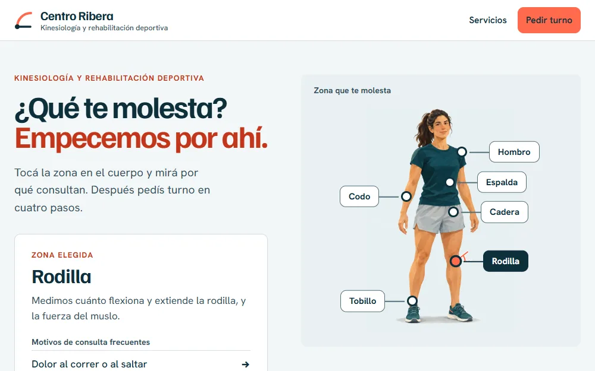

Sistema, sitio web y automatizaciones para negocios de Argentina
Tu negocio, andando.
Armamos y dejamos funcionando lo que tu negocio necesita: ordenar las ventas, que te encuentren o dejar de hacer tareas a mano. Precio y fecha estimada de entrega, por escrito, antes de empezar.
Elegí lo que más se parece a tu caso
¿Qué necesitás resolver?
GrowiApp
Ventas, caja, stock y turnos en una sola pantalla, desde el celular.
Qué resuelve
- Cada venta registrada al momento y el cierre de caja armado solo
- Stock con alertas, antes de quedarte sin nada
- Agenda de turnos y reservas: reemplazás el cuaderno
Cómo empezás
- Lo armamos con los datos de tu negocio
- 1 hora de capacitación en vivo
- 7 días de garantía y sin permanencia
desde $23.000/mes + $75.200 de puesta en marcha
Demo real de GrowiApp, con datos ilustrativos. Elegí un rubro y los datos cambian.
GrowiWeb
Un sitio que presenta tu negocio y facilita las consultas.
Qué resuelve
- Muestra lo que hacés y deja pedir turno o consultar
- Lo dejamos publicado: vos no tocás nada técnico
- Plantilla adaptada a tu rubro o diseño a medida
Cómo empezás
- Precio y alcance por escrito, antes de empezar
- Revisiones incluidas según el plan
- 7 días de ajustes sin cargo desde la entrega
desde $307.000, pago único · dominio y alojamiento aparte
Sitio de muestra con contenido ficticio. Elegí una zona del cuerpo, pedí un turno y recorré las secciones.
GrowiFlow
Menos tareas repetitivas, armadas a medida.
Qué resuelve
- Avisos de turno, resúmenes y consultas en orden, sin que lo hagas vos
- Lo armamos a medida de tu negocio y lo probamos con vos
- Si algo no se puede automatizar, te lo decimos antes de empezar
Cómo empezás
- Nos contás qué tarea te come tiempo
- No hace falta tener GrowiApp ni GrowiWeb
- 7 días de ajustes sin cargo desde la entrega
pago único · pedidos y consultas desde $121.000, reportes y recordatorios $137.000
Hoy lo hacés a mano
Cada día mirás la agenda y avisás uno por uno a quien tiene turno mañana.
Se dispara solo
Y GrowiFlow lo hace sin que intervengas
- Lee la agenda de mañana
- Arma un aviso por cada turno
- Lo envía a cada cliente
Lo que recibe tu cliente
El canal (mail o WhatsApp) se define al armarlo.
Lo que ganásMenos turnos perdidos por olvido, y vos atendiendo en lugar de escribir.
Hoy lo hacés a mano
Te llegan consultas por todos lados y las anotás a mano en una planilla.
Se dispara solo
Y GrowiFlow lo hace sin que intervengas
- Agrega una fila a tu planilla
- Le pone estado «Nueva»
- Te avisa que hay algo para responder
Lo que ves en tu planilla
Y un aviso para que no se te pase.
Lo que ganásLas consultas del formulario quedan en un solo lugar, listas para responder.
Hoy lo hacés a mano
Cada viernes sumás ventas y turnos para saber cómo viene el negocio.
Se dispara solo
Y GrowiFlow lo hace sin que intervengas
- Suma las ventas y los turnos
- Compara con la semana anterior
- Marca lo que conviene mirar
Lo que te llega
- 12 turnos · 1 ausencia
- Lo más pedido: Control
- Bajaron los turnos de los martes
Datos de ejemplo.
Lo que ganásSabés cómo viene el negocio sin sentarte a sacar cuentas.
Combo
Del sitio a la caja, armado por el mismo equipo.
Qué resuelve
- El sitio sale 10% menos
- La puesta en marcha de GrowiApp va sin cargo
- La charla inicial sirve para las dos cosas
Cómo empezás
- Un solo equipo, un solo presupuesto por escrito
- Elegís landing o sitio institucional
- El sistema, mes a mes y sin permanencia
desde $276.000 el sitio + $23.000/mes del sistema
Un mismo negocio: Centro Ribera, un centro de kinesiología
Demostración · datos ficticios
2. La consulta llega por WhatsApp, como hoy. Es el puente entre el sitio y la gestión.

Caso real
Colo Café
Sistema de gestión armado para su cafetería: caja, comandas, stock y gastos.
«Necesitábamos ordenar ventas, reservas y caja sin depender de planillas. Growi nos ayudó a tener una operación más clara y fácil de seguir.»
Rodrigo, dueño de Colo Café
Para tus celebraciones · aparte del negocio
Invitaciones digitales que se abren como un regalo.
Casamientos, cumpleaños, quinceañeras y eventos de empresa: una invitación a medida que se comparte con un enlace y que cada invitado recorre a su manera.
Con presupuesto · sin precio de lista
Cómo empezás
Lo armamos nosotros. Vos atendés tu negocio.
- PASO 01
Nos contás tu negocio
Por WhatsApp, con tus palabras: qué vendés y qué querés resolver.
- PASO 02
Te decimos qué te conviene
Te recomendamos una solución y te pasamos precio y fecha estimada de entrega, antes de que decidas nada.
- PASO 03
Lo armamos y te acompañamos
Lo armamos nosotros, te enseñamos a usarlo y seguimos del otro lado del WhatsApp.
Antes de escribirnos
Lo que se pregunta primero.
¿Tengo que contratar todo junto?
No. GrowiApp, GrowiWeb y GrowiFlow se contratan por separado. Si querés sitio y sistema, el combo suma 10% de descuento en el sitio y la puesta en marcha sin cargo.
¿Cuánto tarda?
En GrowiApp, antes de comenzar te confirmamos por escrito una fecha estimada de entrega. En GrowiWeb, la fecha estimada va en el presupuesto, antes de iniciar el proyecto. En GrowiFlow, el plazo se define al confirmar.
¿Qué incluyen los precios? ¿En qué moneda están?
Cada plan tiene un precio cerrado; los precios «desde» y lo a medida se confirman en un presupuesto por escrito antes de empezar. No incluyen dominio, alojamiento ni costos de terceros. Están fijados en dólares: el valor en pesos es una referencia que se actualiza con el dólar oficial (venta).
¿Qué pasa si no me convence?
Hay 7 días de garantía, contados desde la entrega o activación. En GrowiApp te devolvemos el 100% de la puesta en marcha si no funciona como prometimos; en GrowiWeb y en los paquetes de pago único de GrowiFlow hacemos ajustes sin cargo. Los detalles están en los Términos.
¿Necesito saber de tecnología?
No. Lo armamos nosotros, te enseñamos a usarlo y el soporte es por WhatsApp.
Contanos qué negocio tenés.
Te recomendamos una solución y te pasamos precio y fecha estimada de entrega por WhatsApp, de lunes a sábado de 9 a 19 hs.
Contanos tu negocio